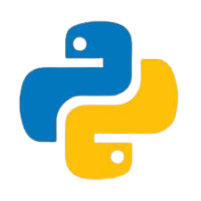

Python був створений наприкінці 1980-х років нідерландським програмістом Гвідо ван Россумом, який працював у Центрі математики та інформатики (CWI) у Нідерландах. Він прагнув розробити просту, зручну для читання та потужну мову програмування, що поєднувала б найкращі ідеї існуючих мов. Натхненний мовою ABC, він розпочав роботу над Python у грудні 1989 року, а вже в 1991 році випустив першу версію (Python 0.9.0), яка включала ключові елементи, такі як винятки, модулі та динамічну типізацію.
З моменту появи Python швидко набув популярності завдяки лаконічному синтаксису та універсальності. У 2000 році вийшла версія Python 2, яка додала підтримку Unicode, а у 2008 році – Python 3, що виправив застарілі рішення та покращив роботу з даними. Сьогодні Python широко використовується у веброзробці, аналізі даних, штучному інтелекті та автоматизації, залишаючись однією з найзатребуваніших мов програмування у світі.
